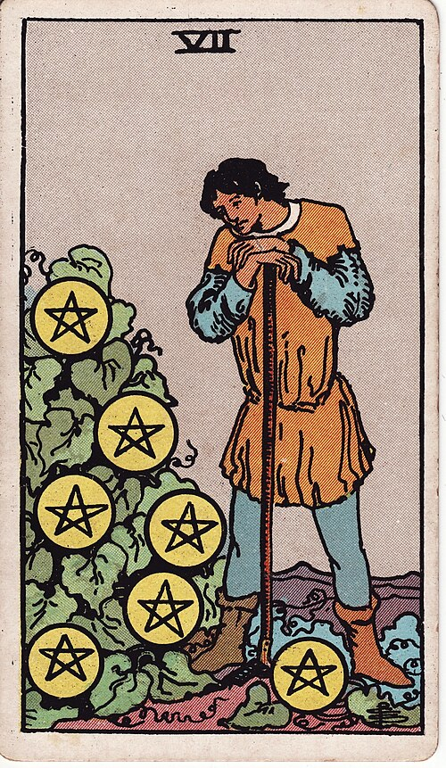

| Arcana | Minor |
| Suit | Pentacles |
| Element | Earth |
| Attribution | Saturn in Taurus |
Seven of Pentacles
In shortYou have done the work. Now wait, and assess honestly.
Upright
The investment is made and the crop is not ripe yet. This is the pause in the middle for an honest look at whether this is actually growing. It counsels patience — and it also permits the question of whether this is worth another season.
Reversed
Either the patience runs out or the return does not come. Effort that has not paid off, a project abandoned just before harvest, or the realisation that you have been tending something that will never bear fruit. Both need the same honest look.
The turn
Give it one more defined season, then evaluate honestly against real numbers.
Reading with your own deck?
Sage records the cards you actually pull, writes the reading, keeps every one, and shows you what keeps returning across them. Free, private, no account.